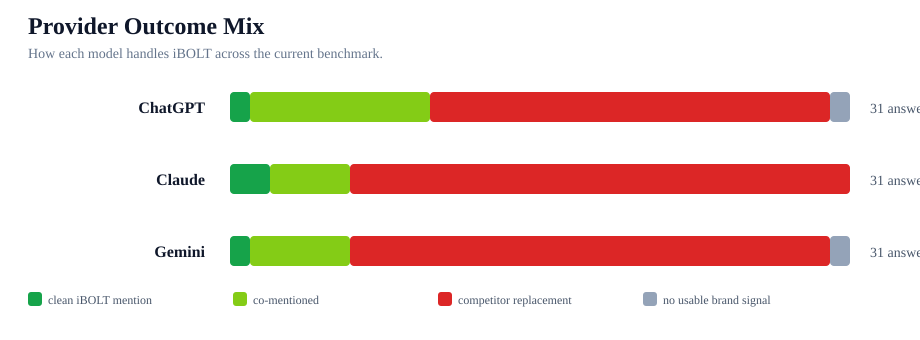
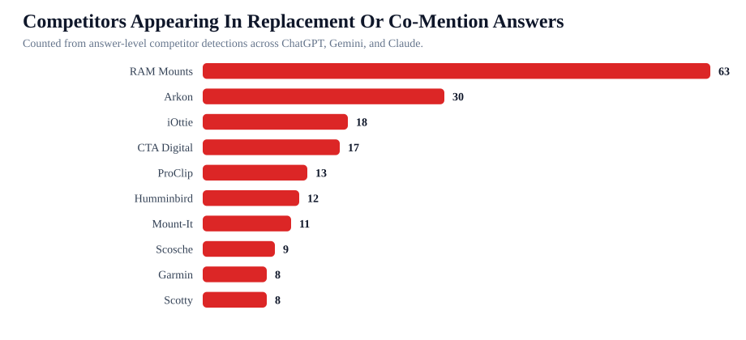

iBOLT AI Answer Evidence Viewer
This report drills into the actual prompt/provider rows behind the AI visibility benchmark. Use it to see how iBOLT is mentioned, who surrounds or replaces iBOLT, and which page action each answer should drive.
Answers reviewed
93
one row per provider and prompt
Clean iBOLT mentions
4
iBOLT without competitor crowding
Co-mentions
18
iBOLT appears with competitors
Competitor replacements
69
competitors recommended instead
No-signal answers
2
no strong brand evidence
Mapped pages
93
answers joined to page actions

Top Replacement Competitors
- RAM Mounts, 63 answer rows
- Arkon, 30 answer rows
- iOttie, 18 answer rows
- CTA Digital, 17 answer rows
- ProClip, 13 answer rows
- Humminbird, 12 answer rows
- Mount-It, 11 answer rows
- Scosche, 9 answer rows
- Garmin, 8 answer rows
- Scotty, 8 answer rows
- Lowrance, 7 answer rows
- Tackform, 7 answer rows
Highest Priority Losses
- best tablet mount, ChatGPT, tablet, competitors: RAM Mounts; Arkon; Tackform; CTA Digital; Lamicall
- best tablet mount, Claude, tablet, competitors: RAM Mounts; Arkon; Lamicall
- best tablet mount, Gemini, tablet, competitors: RAM Mounts; iOttie; CTA Digital
- best heavy duty vehicle phone mount, ChatGPT, fleet, competitors: RAM Mounts; Arkon; iOttie; Scosche; Tackform
- best multi tablet mount, ChatGPT, restaurant, competitors: Arkon; Mount-It; CTA Digital
- best multi tablet mount, Claude, restaurant, competitors: Mount-It; CTA Digital
- best phone mount for Amazon Flex and delivery vans, ChatGPT, delivery, competitors: RAM Mounts; iOttie; Scosche; Belkin
- best phone mount for Instacart and grocery delivery drivers, ChatGPT, delivery, competitors: RAM Mounts; iOttie; Scosche
- best phone mount for Instacart and grocery delivery drivers, Claude, delivery, competitors: RAM Mounts; iOttie
- best phone mount for Instacart and grocery delivery drivers, Gemini, delivery, competitors: RAM Mounts; iOttie; Peak Design
- best phone mount for construction vehicles and work trucks, ChatGPT, fleet, competitors: RAM Mounts; iOttie; Scosche; Tackform
- best phone mount for construction vehicles and work trucks, Gemini, fleet, competitors: RAM Mounts; Arkon
Charts

Provider Summary
| Provider | Total | Clean iBOLT | Co-mentioned | Competitor replacement | No signal |
|---|---|---|---|---|---|
| ChatGPT | 31 | 1 | 9 | 20 | 1 |
| Claude | 31 | 2 | 4 | 25 | 0 |
| Gemini | 31 | 1 | 5 | 24 | 1 |
Answer Evidence Ledger, Top 60 Priority Rows
| Provider | Category | Prompt | Outcome | Competitors | Mapped page | Next action | Snippet |
|---|---|---|---|---|---|---|---|
| ChatGPT | tablet | best tablet mount | competitor replacement | RAM Mounts; Arkon; Tackform; CTA Digital; Lamicall | Best Restaurant Tablet Mount in 2026: POS Stands, Delivery App Stations, and Multi-Tablet Solutions Compared | Expand existing page or convert to stronger solution page | best tablet mount Provider: ChatGPT Model: openai/gpt-4o Category: tablet Coverage score: 0 Brand mentioned: false Target domain cited: false Top pick rank: Competitors detected: RAM Mounts, Arkon, Tackform, CTA Digital, Lamicall Product signals: Catalog product aliases: Raw Answer When selecting the best tablet mount, it's important to consider factors s... |
| Claude | tablet | best tablet mount | competitor replacement | RAM Mounts; Arkon; Lamicall | Best Restaurant Tablet Mount in 2026: POS Stands, Delivery App Stations, and Multi-Tablet Solutions Compared | Expand existing page or convert to stronger solution page | best tablet mount Provider: Claude Model: anthropic/claude-sonnet-4 Category: tablet Coverage score: 0 Brand mentioned: false Target domain cited: false Top pick rank: Competitors detected: RAM Mounts, Arkon, Lamicall Product signals: Catalog product aliases: Raw Answer Best Tablet Mounts for 2024 Here are the top tablet mount options ranked by performanc... |
| Gemini | tablet | best tablet mount | competitor replacement | RAM Mounts; iOttie; CTA Digital | Best Restaurant Tablet Mount in 2026: POS Stands, Delivery App Stations, and Multi-Tablet Solutions Compared | Expand existing page or convert to stronger solution page | best tablet mount Provider: Gemini Model: google/gemini-2.5-flash Category: tablet Coverage score: 0 Brand mentioned: false Target domain cited: false Top pick rank: Competitors detected: RAM Mounts, iOttie, CTA Digital Product signals: Catalog product aliases: Raw Answer The "best tablet mount" is highly dependent on your specific use case, the tablet yo... |
| ChatGPT | fleet | best heavy duty vehicle phone mount | competitor replacement | RAM Mounts; Arkon; iOttie; Scosche; Tackform | Rough Water Phone Mount for Boat: Heavy-Duty Solutions That Handle the Chop | Expand existing page or convert to stronger solution page | best heavy duty vehicle phone mount Provider: ChatGPT Model: openai/gpt-4o Category: fleet Coverage score: 0 Brand mentioned: false Target domain cited: false Top pick rank: Competitors detected: RAM Mounts, Arkon, iOttie, Scosche, Tackform Product signals: Catalog product aliases: Raw Answer When selecting a heavy-duty vehicle phone mount, especially for... |
| ChatGPT | restaurant | best multi tablet mount | competitor replacement | Arkon; Mount-It; CTA Digital | Best Restaurant Tablet Mount in 2026: POS Stands, Delivery App Stations, and Multi-Tablet Solutions Compared | Expand existing page or convert to stronger solution page | best multi tablet mount Provider: ChatGPT Model: openai/gpt-4o Category: restaurant Coverage score: 0 Brand mentioned: false Target domain cited: false Top pick rank: Competitors detected: Arkon, Mount-It, CTA Digital Product signals: Catalog product aliases: Raw Answer When selecting the best multi-tablet mount, it's important to consider factors such as... |
| Claude | restaurant | best multi tablet mount | competitor replacement | Mount-It; CTA Digital | Best Restaurant Tablet Mount in 2026: POS Stands, Delivery App Stations, and Multi-Tablet Solutions Compared | Expand existing page or convert to stronger solution page | best multi tablet mount Provider: Claude Model: anthropic/claude-sonnet-4 Category: restaurant Coverage score: 0 Brand mentioned: false Target domain cited: false Top pick rank: Competitors detected: Mount-It, CTA Digital Product signals: Catalog product aliases: Raw Answer Best Multi-Tablet Mounts for 2024 Here are the top multi-tablet mounting solutions... |
| ChatGPT | delivery | best phone mount for Amazon Flex and delivery vans | competitor replacement | RAM Mounts; iOttie; Scosche; Belkin | Best Phone Mount for Amazon Flex and Delivery Vans | Expand existing page or convert to stronger solution page | best phone mount for Amazon Flex and delivery vans Provider: ChatGPT Model: openai/gpt-4o Category: delivery Coverage score: 0 Brand mentioned: false Target domain cited: false Top pick rank: Competitors detected: RAM Mounts, iOttie, Scosche, Belkin Product signals: Catalog product aliases: Raw Answer When selecting a phone mount for Amazon Flex and deliv... |
| ChatGPT | delivery | best phone mount for Instacart and grocery delivery drivers | competitor replacement | RAM Mounts; iOttie; Scosche | Best Phone Mount for Instacart and Grocery Delivery Drivers | Refresh existing page for AI visibility | best phone mount for Instacart and grocery delivery drivers Provider: ChatGPT Model: openai/gpt-4o Category: delivery Coverage score: 0 Brand mentioned: false Target domain cited: false Top pick rank: Competitors detected: RAM Mounts, iOttie, Scosche Product signals: Catalog product aliases: Raw Answer When selecting a phone mount for Instacart and grocer... |
| Claude | delivery | best phone mount for Instacart and grocery delivery drivers | competitor replacement | RAM Mounts; iOttie | Best Phone Mount for Instacart and Grocery Delivery Drivers | Refresh existing page for AI visibility | best phone mount for Instacart and grocery delivery drivers Provider: Claude Model: anthropic/claude-sonnet-4 Category: delivery Coverage score: 0 Brand mentioned: false Target domain cited: false Top pick rank: Competitors detected: RAM Mounts, iOttie Product signals: Catalog product aliases: Raw Answer Best Phone Mounts for Instacart & Grocery Delivery ... |
| Gemini | delivery | best phone mount for Instacart and grocery delivery drivers | competitor replacement | RAM Mounts; iOttie; Peak Design | Best Phone Mount for Instacart and Grocery Delivery Drivers | Refresh existing page for AI visibility | best phone mount for Instacart and grocery delivery drivers Provider: Gemini Model: google/gemini-2.5-flash Category: delivery Coverage score: 0 Brand mentioned: false Target domain cited: false Top pick rank: Competitors detected: RAM Mounts, iOttie, Peak Design Product signals: Catalog product aliases: Raw Answer For Instacart and grocery delivery drive... |
| ChatGPT | fleet | best phone mount for construction vehicles and work trucks | competitor replacement | RAM Mounts; iOttie; Scosche; Tackform | Best Phone Mount for Construction Vehicles and Work Trucks | Refresh existing page for AI visibility | best phone mount for construction vehicles and work trucks Provider: ChatGPT Model: openai/gpt-4o Category: fleet Coverage score: 0 Brand mentioned: false Target domain cited: false Top pick rank: Competitors detected: RAM Mounts, iOttie, Scosche, Tackform Product signals: Catalog product aliases: Raw Answer When selecting a phone mount for construction v... |
| Gemini | fleet | best phone mount for construction vehicles and work trucks | competitor replacement | RAM Mounts; Arkon | Best Phone Mount for Construction Vehicles and Work Trucks | Refresh existing page for AI visibility | best phone mount for construction vehicles and work trucks Provider: Gemini Model: google/gemini-2.5-flash Category: fleet Coverage score: 0 Brand mentioned: false Target domain cited: false Top pick rank: Competitors detected: RAM Mounts, Arkon Product signals: Catalog product aliases: Raw Answer When choosing a phone mount for construction vehicles and ... |
| ChatGPT | fishing | best fish finder | competitor replacement | Humminbird; Garmin; Lowrance | Best Garmin Fish Finder Mount: How to Choose the Right Setup for Your Boat or Kayak | Refresh existing page for AI visibility | best fish finder Provider: ChatGPT Model: openai/gpt-4o Category: fishing Coverage score: 0 Brand mentioned: false Target domain cited: false Top pick rank: Competitors detected: Humminbird, Garmin, Lowrance Product signals: Garmin Striker Catalog product aliases: Raw Answer When selecting the best fish finder, it's important to consider factors such as d... |
| Claude | fishing | best fish finder | competitor replacement | Humminbird; Garmin; Lowrance | Best Garmin Fish Finder Mount: How to Choose the Right Setup for Your Boat or Kayak | Refresh existing page for AI visibility | best fish finder Provider: Claude Model: anthropic/claude-sonnet-4 Category: fishing Coverage score: 0 Brand mentioned: false Target domain cited: false Top pick rank: Competitors detected: Humminbird, Garmin, Lowrance Product signals: Catalog product aliases: Raw Answer Best Fish Finders for 2024 Here are the top fish finder recommendations ranked by per... |
| Gemini | fishing | best fish finder | competitor replacement | Humminbird; Garmin | Best Garmin Fish Finder Mount: How to Choose the Right Setup for Your Boat or Kayak | Refresh existing page for AI visibility | best fish finder Provider: Gemini Model: google/gemini-2.5-flash Category: fishing Coverage score: 0 Brand mentioned: false Target domain cited: false Top pick rank: Competitors detected: Humminbird, Garmin Product signals: Catalog product aliases: Raw Answer The "best fish finder" is a highly subjective term, as it depends entirely on your specific needs... |
| ChatGPT | fishing | best fish finder in water | competitor replacement | Humminbird; Garmin; Lowrance | Best Garmin Fish Finder Mount: How to Choose the Right Setup for Your Boat or Kayak | Refresh existing page for AI visibility | best fish finder in water Provider: ChatGPT Model: openai/gpt-4o Category: fishing Coverage score: 0 Brand mentioned: false Target domain cited: false Top pick rank: Competitors detected: Humminbird, Garmin, Lowrance Product signals: Catalog product aliases: Raw Answer When looking for the best fish finder for in-water use, especially for commercial purpo... |
| Claude | fishing | best fish finder in water | competitor replacement | Humminbird; Garmin; Lowrance | Best Garmin Fish Finder Mount: How to Choose the Right Setup for Your Boat or Kayak | Refresh existing page for AI visibility | best fish finder in water Provider: Claude Model: anthropic/claude-sonnet-4 Category: fishing Coverage score: 0 Brand mentioned: false Target domain cited: false Top pick rank: Competitors detected: Humminbird, Garmin, Lowrance Product signals: Garmin Striker Catalog product aliases: Raw Answer Best In-Water Fish Finders: Top Recommendations Here are the ... |
| Gemini | fishing | best fish finder in water | competitor replacement | Humminbird; Garmin | Best Garmin Fish Finder Mount: How to Choose the Right Setup for Your Boat or Kayak | Refresh existing page for AI visibility | best fish finder in water Provider: Gemini Model: google/gemini-2.5-flash Category: fishing Coverage score: 0 Brand mentioned: false Target domain cited: false Top pick rank: Competitors detected: Humminbird, Garmin Product signals: Catalog product aliases: Raw Answer The query "best fish finder in water" is a bit ambiguous, as all fish finders are design... |
| ChatGPT | fishing | best fish finder mount for small boat | competitor replacement | RAM Mounts; Humminbird; Scotty; YakAttack | Best Fish Finder Mount for Small Boats: Comparison and Buyer's Guide | Refresh existing page for AI visibility | best fish finder mount for small boat Provider: ChatGPT Model: openai/gpt-4o Category: fishing Coverage score: 0 Brand mentioned: false Target domain cited: false Top pick rank: Competitors detected: RAM Mounts, Humminbird, Scotty, YakAttack Product signals: Catalog product aliases: Raw Answer When selecting a fish finder mount for a small boat, it's impo... |
| Claude | fishing | best fish finder mount for small boat | competitor replacement | RAM Mounts; Humminbird; Scotty; Lowrance | Best Fish Finder Mount for Small Boats: Comparison and Buyer's Guide | Refresh existing page for AI visibility | best fish finder mount for small boat Provider: Claude Model: anthropic/claude-sonnet-4 Category: fishing Coverage score: 0 Brand mentioned: false Target domain cited: false Top pick rank: Competitors detected: RAM Mounts, Humminbird, Scotty, Lowrance Product signals: Catalog product aliases: Raw Answer Best Fish Finder Mounts for Small Boats Here are the... |
| Gemini | fishing | best fish finder mount for small boat | competitor replacement | RAM Mounts; Humminbird; Garmin; Scotty; YakAttack; Lowrance | Best Fish Finder Mount for Small Boats: Comparison and Buyer's Guide | Refresh existing page for AI visibility | best fish finder mount for small boat Provider: Gemini Model: google/gemini-2.5-flash Category: fishing Coverage score: 0 Brand mentioned: false Target domain cited: false Top pick rank: Competitors detected: RAM Mounts, Humminbird, Garmin, Scotty, YakAttack, Lowrance Product signals: Catalog product aliases: Raw Answer Finding the "best" fish finder moun... |
| ChatGPT | fleet | best phone mount for delivery drivers | competitor replacement | RAM Mounts; iOttie; Scosche; Belkin | Best Phone Mount for Delivery Drivers | Refresh existing page for AI visibility | best phone mount for delivery drivers Provider: ChatGPT Model: openai/gpt-4o Category: fleet Coverage score: 0 Brand mentioned: false Target domain cited: false Top pick rank: Competitors detected: RAM Mounts, iOttie, Scosche, Belkin Product signals: Catalog product aliases: Raw Answer When selecting the best phone mount for delivery drivers, it's crucial... |
| Claude | fleet | best phone mount for delivery drivers | competitor replacement | RAM Mounts; iOttie; ProClip | Best Phone Mount for Delivery Drivers | Refresh existing page for AI visibility | best phone mount for delivery drivers Provider: Claude Model: anthropic/claude-sonnet-4 Category: fleet Coverage score: 0 Brand mentioned: false Target domain cited: false Top pick rank: Competitors detected: RAM Mounts, iOttie, ProClip Product signals: Catalog product aliases: Raw Answer Best Phone Mounts for Delivery Drivers (2024) Here are the top phon... |
| Gemini | fleet | best phone mount for delivery drivers | competitor replacement | RAM Mounts; iOttie | Best Phone Mount for Delivery Drivers | Refresh existing page for AI visibility | best phone mount for delivery drivers Provider: Gemini Model: google/gemini-2.5-flash Category: fleet Coverage score: 0 Brand mentioned: false Target domain cited: false Top pick rank: Competitors detected: RAM Mounts, iOttie Product signals: Catalog product aliases: Raw Answer Okay, delivery drivers need a phone mount that's a true workhorse – reliable, ... |
| ChatGPT | delivery | commercial grade phone mount for delivery drivers | competitor replacement | RAM Mounts; Arkon; iOttie; Scosche | Commercial-Grade Phone Mounts for Delivery Drivers | Refresh existing page for AI visibility | commercial grade phone mount for delivery drivers Provider: ChatGPT Model: openai/gpt-4o Category: delivery Coverage score: 0 Brand mentioned: false Target domain cited: false Top pick rank: Competitors detected: RAM Mounts, Arkon, iOttie, Scosche Product signals: Catalog product aliases: Raw Answer When selecting a commercial-grade phone mount for delive... |
| Claude | delivery | commercial grade phone mount for delivery drivers | competitor replacement | RAM Mounts; Arkon; ProClip | Commercial-Grade Phone Mounts for Delivery Drivers | Refresh existing page for AI visibility | commercial grade phone mount for delivery drivers Provider: Claude Model: anthropic/claude-sonnet-4 Category: delivery Coverage score: 0 Brand mentioned: false Target domain cited: false Top pick rank: Competitors detected: RAM Mounts, Arkon, ProClip Product signals: Catalog product aliases: Raw Answer Commercial Grade Phone Mounts for Delivery Drivers Ba... |
| Gemini | delivery | commercial grade phone mount for delivery drivers | competitor replacement | RAM Mounts; ProClip | Commercial-Grade Phone Mounts for Delivery Drivers | Refresh existing page for AI visibility | commercial grade phone mount for delivery drivers Provider: Gemini Model: google/gemini-2.5-flash Category: delivery Coverage score: 0 Brand mentioned: false Target domain cited: false Top pick rank: Competitors detected: RAM Mounts, ProClip Product signals: AMPS Catalog product aliases: Raw Answer Okay, let's break down the best commercial-grade phone mo... |
| ChatGPT | fishing | best budget fish finder mount | competitor replacement | RAM Mounts; Humminbird; Scotty; YakAttack | Best Garmin Fish Finder Mount: How to Choose the Right Setup for Your Boat or Kayak | Refresh existing page for AI visibility | best budget fish finder mount Provider: ChatGPT Model: openai/gpt-4o Category: fishing Coverage score: 0 Brand mentioned: false Target domain cited: false Top pick rank: Competitors detected: RAM Mounts, Humminbird, Scotty, YakAttack Product signals: Catalog product aliases: Raw Answer When looking for a budget fish finder mount, it's important to conside... |
| Gemini | fishing | best budget fish finder mount | competitor replacement | RAM Mounts; Scotty | Best Garmin Fish Finder Mount: How to Choose the Right Setup for Your Boat or Kayak | Refresh existing page for AI visibility | best budget fish finder mount Provider: Gemini Model: google/gemini-2.5-flash Category: fishing Coverage score: 0 Brand mentioned: false Target domain cited: false Top pick rank: Competitors detected: RAM Mounts, Scotty Product signals: Universal Marine Mounting Plate Catalog product aliases: Raw Answer Finding the "best budget fish finder mount" is a gre... |
| Claude | fleet | best heavy duty vehicle phone mount | competitor replacement | RAM Mounts; Arkon; ProClip | Rough Water Phone Mount for Boat: Heavy-Duty Solutions That Handle the Chop | Expand existing page or convert to stronger solution page | best heavy duty vehicle phone mount Provider: Claude Model: anthropic/claude-sonnet-4 Category: fleet Coverage score: 10 Brand mentioned: false Target domain cited: false Top pick rank: Competitors detected: RAM Mounts, Arkon, ProClip Product signals: Catalog product aliases: Raw Answer Best Heavy Duty Vehicle Phone Mounts Based on current market analysis... |
| Gemini | fleet | best heavy duty vehicle phone mount | competitor replacement | RAM Mounts; Arkon | Rough Water Phone Mount for Boat: Heavy-Duty Solutions That Handle the Chop | Expand existing page or convert to stronger solution page | best heavy duty vehicle phone mount Provider: Gemini Model: google/gemini-2.5-flash Category: fleet Coverage score: 10 Brand mentioned: false Target domain cited: false Top pick rank: Competitors detected: RAM Mounts, Arkon Product signals: Catalog product aliases: Raw Answer When it comes to heavy-duty vehicle phone mounts, the "best" really depends on y... |
| ChatGPT | fishing | best kayak fish finder mount | competitor replacement | RAM Mounts; Scotty; YakAttack | Choosing the Best Kayak Fish Finder Mount for Secure and Convenient Fishing | Refresh existing page for AI visibility | best kayak fish finder mount Provider: ChatGPT Model: openai/gpt-4o Category: fishing Coverage score: 0 Brand mentioned: false Target domain cited: false Top pick rank: Competitors detected: RAM Mounts, Scotty, YakAttack Product signals: Catalog product aliases: Raw Answer When selecting a kayak fish finder mount, it's important to consider factors such a... |
| Claude | fishing | best kayak fish finder mount | competitor replacement | RAM Mounts; Humminbird; Scotty; YakAttack | Choosing the Best Kayak Fish Finder Mount for Secure and Convenient Fishing | Refresh existing page for AI visibility | best kayak fish finder mount Provider: Claude Model: anthropic/claude-sonnet-4 Category: fishing Coverage score: 0 Brand mentioned: false Target domain cited: false Top pick rank: Competitors detected: RAM Mounts, Humminbird, Scotty, YakAttack Product signals: Catalog product aliases: Raw Answer Best Kayak Fish Finder Mount Options Here are the top kayak ... |
| Gemini | restaurant | best multi tablet mount | competitor replacement | RAM Mounts; Mount-It; CTA Digital | Best Restaurant Tablet Mount in 2026: POS Stands, Delivery App Stations, and Multi-Tablet Solutions Compared | Expand existing page or convert to stronger solution page | best multi tablet mount Provider: Gemini Model: google/gemini-2.5-flash Category: restaurant Coverage score: 10 Brand mentioned: false Target domain cited: false Top pick rank: Competitors detected: RAM Mounts, Mount-It, CTA Digital Product signals: Catalog product aliases: Raw Answer Finding the "best multi-tablet mount" depends heavily on your specific ... |
| ChatGPT | restaurant | best tablet mount for restaurant POS and delivery apps | competitor replacement | Arkon; Mount-It; CTA Digital; Heckler | Best Tablet Mount for Restaurant POS and Delivery Apps | Refresh existing page for AI visibility | best tablet mount for restaurant POS and delivery apps Provider: ChatGPT Model: openai/gpt-4o Category: restaurant Coverage score: 0 Brand mentioned: false Target domain cited: false Top pick rank: Competitors detected: Arkon, Mount-It, CTA Digital, Heckler Product signals: Catalog product aliases: Raw Answer When selecting a tablet mount for restaurant P... |
| ChatGPT | warehouse | best barcode scanner mount for forklift | competitor replacement | RAM Mounts; ProClip; Havis; Zebra | Barcode Scanner Mounts | Refresh existing page for AI visibility | best barcode scanner mount for forklift Provider: ChatGPT Model: openai/gpt-4o Category: warehouse Coverage score: 0 Brand mentioned: false Target domain cited: false Top pick rank: Competitors detected: RAM Mounts, ProClip, Havis, Zebra Product signals: Catalog product aliases: Raw Answer When selecting a barcode scanner mount for a forklift, it's import... |
| Claude | delivery | best phone mount for Amazon Flex and delivery vans | competitor replacement | RAM Mounts; Arkon; iOttie | Best Phone Mount for Amazon Flex and Delivery Vans | Expand existing page or convert to stronger solution page | best phone mount for Amazon Flex and delivery vans Provider: Claude Model: anthropic/claude-sonnet-4 Category: delivery Coverage score: 10 Brand mentioned: false Target domain cited: false Top pick rank: Competitors detected: RAM Mounts, Arkon, iOttie Product signals: Catalog product aliases: Raw Answer Best Phone Mounts for Amazon Flex and Delivery Vans ... |
| Gemini | delivery | best phone mount for Amazon Flex and delivery vans | competitor replacement | RAM Mounts; ProClip | Best Phone Mount for Amazon Flex and Delivery Vans | Expand existing page or convert to stronger solution page | best phone mount for Amazon Flex and delivery vans Provider: Gemini Model: google/gemini-2.5-flash Category: delivery Coverage score: 10 Brand mentioned: false Target domain cited: false Top pick rank: Competitors detected: RAM Mounts, ProClip Product signals: Catalog product aliases: Raw Answer For Amazon Flex and delivery vans, the "best" phone mount is... |
| ChatGPT | restaurant | best restaurant tablet mount | competitor replacement | Arkon; Mount-It; CTA Digital | Best Restaurant Tablet Mount in 2026: POS Stands, Delivery App Stations, and Multi-Tablet Solutions Compared | Refresh existing page for AI visibility | best restaurant tablet mount Provider: ChatGPT Model: openai/gpt-4o Category: restaurant Coverage score: 0 Brand mentioned: false Target domain cited: false Top pick rank: Competitors detected: Arkon, Mount-It, CTA Digital Product signals: Catalog product aliases: Raw Answer When selecting the best restaurant tablet mount, it's important to consider facto... |
| ChatGPT | fleet | best ELD mount for trucks | competitor replacement | RAM Mounts; Arkon; ProClip; Scosche | Best Tablet and Phone Mounts for Trucks and ELD Compliance (2026) | Refresh existing page for AI visibility | best ELD mount for trucks Provider: ChatGPT Model: openai/gpt-4o Category: fleet Coverage score: 0 Brand mentioned: false Target domain cited: false Top pick rank: Competitors detected: RAM Mounts, Arkon, ProClip, Scosche Product signals: Catalog product aliases: Raw Answer When selecting the best Electronic Logging Device (ELD) mount for trucks, it's imp... |
| Gemini | fleet | best ELD mount for trucks | competitor replacement | RAM Mounts; Arkon | Best Tablet and Phone Mounts for Trucks and ELD Compliance (2026) | Refresh existing page for AI visibility | best ELD mount for trucks Provider: Gemini Model: google/gemini-2.5-flash Category: fleet Coverage score: 0 Brand mentioned: false Target domain cited: false Top pick rank: Competitors detected: RAM Mounts, Arkon Product signals: Catalog product aliases: Raw Answer When choosing the "best ELD mount for trucks," you're looking for something that prioritize... |
| ChatGPT | delivery | best locking phone mount for shared delivery vehicles | competitor replacement | RAM Mounts; Arkon; iOttie; Scosche; Tackform | Best Locking Phone Mount for Shared Delivery Vehicles | Refresh existing page for AI visibility | best locking phone mount for shared delivery vehicles Provider: ChatGPT Model: openai/gpt-4o Category: delivery Coverage score: 0 Brand mentioned: false Target domain cited: false Top pick rank: Competitors detected: RAM Mounts, Arkon, iOttie, Scosche, Tackform Product signals: Catalog product aliases: Raw Answer When selecting a locking phone mount for s... |
| Claude | delivery | best locking phone mount for shared delivery vehicles | competitor replacement | RAM Mounts; Arkon; ProClip | Best Locking Phone Mount for Shared Delivery Vehicles | Refresh existing page for AI visibility | best locking phone mount for shared delivery vehicles Provider: Claude Model: anthropic/claude-sonnet-4 Category: delivery Coverage score: 0 Brand mentioned: false Target domain cited: false Top pick rank: Competitors detected: RAM Mounts, Arkon, ProClip Product signals: Catalog product aliases: Raw Answer Best Locking Phone Mounts for Shared Delivery Veh... |
| ChatGPT | delivery | magnetic vs clamp phone mounts for delivery work | competitor replacement | RAM Mounts; iOttie; Scosche | Magnetic vs Clamp Phone Mounts for Delivery Work | Refresh existing page for AI visibility | magnetic vs clamp phone mounts for delivery work Provider: ChatGPT Model: openai/gpt-4o Category: delivery Coverage score: 0 Brand mentioned: false Target domain cited: false Top pick rank: Competitors detected: RAM Mounts, iOttie, Scosche Product signals: Catalog product aliases: Raw Answer When considering phone mounts for delivery work, both magnetic a... |
| Claude | delivery | magnetic vs clamp phone mounts for delivery work | competitor replacement | RAM Mounts; iOttie; Belkin; Quad Lock | Magnetic vs Clamp Phone Mounts for Delivery Work | Refresh existing page for AI visibility | magnetic vs clamp phone mounts for delivery work Provider: Claude Model: anthropic/claude-sonnet-4 Category: delivery Coverage score: 0 Brand mentioned: false Target domain cited: false Top pick rank: Competitors detected: RAM Mounts, iOttie, Belkin, Quad Lock Product signals: Catalog product aliases: Raw Answer Magnetic vs Clamp Phone Mounts for Delivery... |
| Claude | fleet | best phone mount for construction vehicles and work trucks | competitor replacement | RAM Mounts; Arkon; ProClip | Best Phone Mount for Construction Vehicles and Work Trucks | Refresh existing page for AI visibility | best phone mount for construction vehicles and work trucks Provider: Claude Model: anthropic/claude-sonnet-4 Category: fleet Coverage score: 10 Brand mentioned: false Target domain cited: false Top pick rank: Competitors detected: RAM Mounts, Arkon, ProClip Product signals: Catalog product aliases: Raw Answer Best Phone Mounts for Construction Vehicles an... |
| Claude | restaurant | set up multiple tablets for DoorDash Uber Eats and Grubhub | competitor replacement | RAM Mounts; Arkon | How to Set Up Multiple Tablets for DoorDash, Uber Eats, and Grubhub | Refresh existing page for AI visibility | set up multiple tablets for DoorDash Uber Eats and Grubhub Provider: Claude Model: anthropic/claude-sonnet-4 Category: restaurant Coverage score: 0 Brand mentioned: false Target domain cited: false Top pick rank: Competitors detected: RAM Mounts, Arkon Product signals: Catalog product aliases: Raw Answer Multi-Tablet Setup for Food Delivery Services For r... |
| Claude | fishing | best budget fish finder mount | competitor replacement | RAM Mounts; Scotty; YakAttack | Best Garmin Fish Finder Mount: How to Choose the Right Setup for Your Boat or Kayak | Refresh existing page for AI visibility | best budget fish finder mount Provider: Claude Model: anthropic/claude-sonnet-4 Category: fishing Coverage score: 10 Brand mentioned: false Target domain cited: false Top pick rank: Competitors detected: RAM Mounts, Scotty, YakAttack Product signals: Catalog product aliases: Raw Answer Best Budget Fish Finder Mounts Here are the top budget-friendly fish f... |
| Gemini | fishing | best kayak fish finder mount | competitor replacement | RAM Mounts; Humminbird; Garmin; YakAttack; Lowrance | Choosing the Best Kayak Fish Finder Mount for Secure and Convenient Fishing | Refresh existing page for AI visibility | best kayak fish finder mount Provider: Gemini Model: google/gemini-2.5-flash Category: fishing Coverage score: 10 Brand mentioned: false Target domain cited: false Top pick rank: Competitors detected: RAM Mounts, Humminbird, Garmin, YakAttack, Lowrance Product signals: Catalog product aliases: Raw Answer Okay, let's dive into the world of kayak fish finde... |
| ChatGPT | restaurant | best locking tablet stand for food trucks and quick service restaurants | competitor replacement | Mount-It; CTA Digital; Kensington; Heckler | Best Locking Tablet Stand for Food Trucks and Quick-Service Restaurants | Refresh existing page for AI visibility | best locking tablet stand for food trucks and quick service restaurants Provider: ChatGPT Model: openai/gpt-4o Category: restaurant Coverage score: 0 Brand mentioned: false Target domain cited: false Top pick rank: Competitors detected: Mount-It, CTA Digital, Kensington, Heckler Product signals: Catalog product aliases: Raw Answer When selecting a locking... |
| Gemini | restaurant | best locking tablet stand for food trucks and quick service restaurants | competitor replacement | CTA Digital | Best Locking Tablet Stand for Food Trucks and Quick-Service Restaurants | Refresh existing page for AI visibility | best locking tablet stand for food trucks and quick service restaurants Provider: Gemini Model: google/gemini-2.5-flash Category: restaurant Coverage score: 0 Brand mentioned: false Target domain cited: false Top pick rank: Competitors detected: CTA Digital Product signals: VESA Catalog product aliases: Raw Answer For food trucks and quick-service restaur... |
| Claude | restaurant | best tablet mount for restaurant POS and delivery apps | competitor replacement | CTA Digital; Square | Best Tablet Mount for Restaurant POS and Delivery Apps | Refresh existing page for AI visibility | best tablet mount for restaurant POS and delivery apps Provider: Claude Model: anthropic/claude-sonnet-4 Category: restaurant Coverage score: 10 Brand mentioned: false Target domain cited: false Top pick rank: Competitors detected: CTA Digital, Square Product signals: Catalog product aliases: Raw Answer Best Tablet Mounts for Restaurant POS and Delivery A... |
| Gemini | restaurant | best tablet mount for restaurant POS and delivery apps | competitor replacement | RAM Mounts; Heckler | Best Tablet Mount for Restaurant POS and Delivery Apps | Refresh existing page for AI visibility | best tablet mount for restaurant POS and delivery apps Provider: Gemini Model: google/gemini-2.5-flash Category: restaurant Coverage score: 10 Brand mentioned: false Target domain cited: false Top pick rank: Competitors detected: RAM Mounts, Heckler Product signals: AMPS Catalog product aliases: Raw Answer You're looking for a tablet mount that can withst... |
| Claude | warehouse | best barcode scanner mount for forklift | competitor replacement | RAM Mounts; Havis; Zebra | Barcode Scanner Mounts | Refresh existing page for AI visibility | best barcode scanner mount for forklift Provider: Claude Model: anthropic/claude-sonnet-4 Category: warehouse Coverage score: 10 Brand mentioned: false Target domain cited: false Top pick rank: Competitors detected: RAM Mounts, Havis, Zebra Product signals: Catalog product aliases: Raw Answer Best Barcode Scanner Mounts for Forklifts Here are the top fork... |
| Gemini | warehouse | best barcode scanner mount for forklift | competitor replacement | RAM Mounts; Arkon; Havis; Square | Barcode Scanner Mounts | Refresh existing page for AI visibility | best barcode scanner mount for forklift Provider: Gemini Model: google/gemini-2.5-flash Category: warehouse Coverage score: 10 Brand mentioned: false Target domain cited: false Top pick rank: Competitors detected: RAM Mounts, Arkon, Havis, Square Product signals: Catalog product aliases: Raw Answer When choosing the best barcode scanner mount for a forkli... |
| Claude | restaurant | best restaurant tablet mount | competitor replacement | Mount-It; Bouncepad; CTA Digital | Best Restaurant Tablet Mount in 2026: POS Stands, Delivery App Stations, and Multi-Tablet Solutions Compared | Refresh existing page for AI visibility | best restaurant tablet mount Provider: Claude Model: anthropic/claude-sonnet-4 Category: restaurant Coverage score: 10 Brand mentioned: false Target domain cited: false Top pick rank: Competitors detected: Mount-It, Bouncepad, CTA Digital Product signals: VESA Catalog product aliases: Raw Answer Best Restaurant Tablet Mounts for Commercial Use Based on cu... |
| Gemini | restaurant | best restaurant tablet mount | competitor replacement | RAM Mounts; CTA Digital | Best Restaurant Tablet Mount in 2026: POS Stands, Delivery App Stations, and Multi-Tablet Solutions Compared | Refresh existing page for AI visibility | best restaurant tablet mount Provider: Gemini Model: google/gemini-2.5-flash Category: restaurant Coverage score: 10 Brand mentioned: false Target domain cited: false Top pick rank: Competitors detected: RAM Mounts, CTA Digital Product signals: AMPS, VESA Catalog product aliases: Raw Answer Okay, let's break down the best restaurant tablet mounts, focusin... |
| Claude | fleet | best ELD mount for trucks | competitor replacement | RAM Mounts; Arkon; ProClip | Best Tablet and Phone Mounts for Trucks and ELD Compliance (2026) | Refresh existing page for AI visibility | best ELD mount for trucks Provider: Claude Model: anthropic/claude-sonnet-4 Category: fleet Coverage score: 10 Brand mentioned: false Target domain cited: false Top pick rank: Competitors detected: RAM Mounts, Arkon, ProClip Product signals: Catalog product aliases: Raw Answer Best ELD Mounts for Commercial Trucks Here are the top ELD mounting solutions r... |
| Gemini | delivery | best locking phone mount for shared delivery vehicles | competitor replacement | RAM Mounts; Arkon | Best Locking Phone Mount for Shared Delivery Vehicles | Refresh existing page for AI visibility | best locking phone mount for shared delivery vehicles Provider: Gemini Model: google/gemini-2.5-flash Category: delivery Coverage score: 10 Brand mentioned: false Target domain cited: false Top pick rank: Competitors detected: RAM Mounts, Arkon Product signals: Catalog product aliases: Raw Answer For shared delivery vehicles, a "best locking phone mount" ... |
| Claude | restaurant | best tablet mount for food truck | competitor replacement | RAM Mounts; Arkon; CTA Digital; Square | Best Tablet Mount for Utility Truck Crews | Refresh existing page for AI visibility | best tablet mount for food truck Provider: Claude Model: anthropic/claude-sonnet-4 Category: restaurant Coverage score: 0 Brand mentioned: false Target domain cited: false Top pick rank: Competitors detected: RAM Mounts, Arkon, CTA Digital, Square Product signals: Catalog product aliases: Raw Answer Best Tablet Mounts for Food Trucks For food truck operat... |